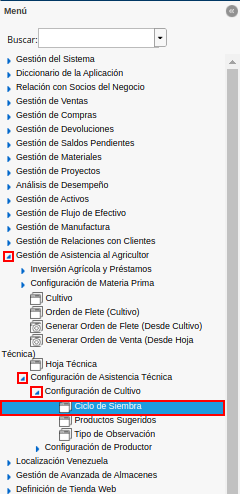
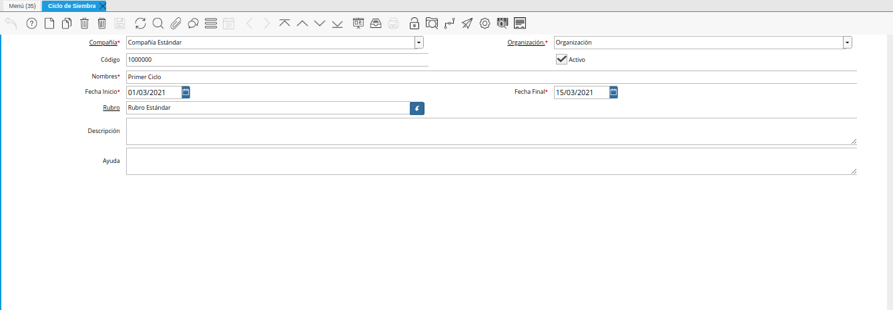
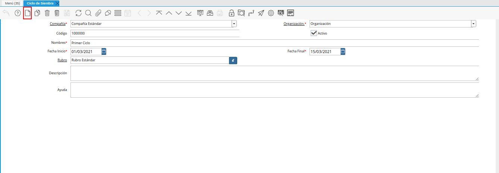
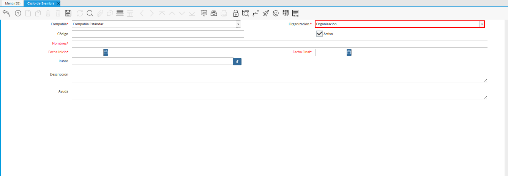
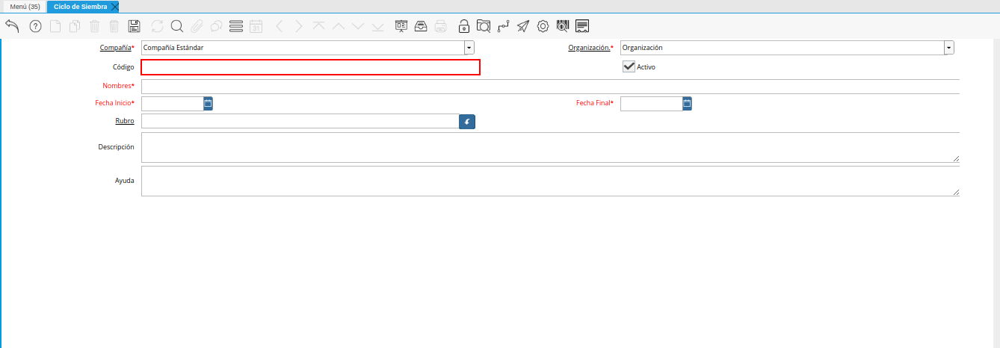
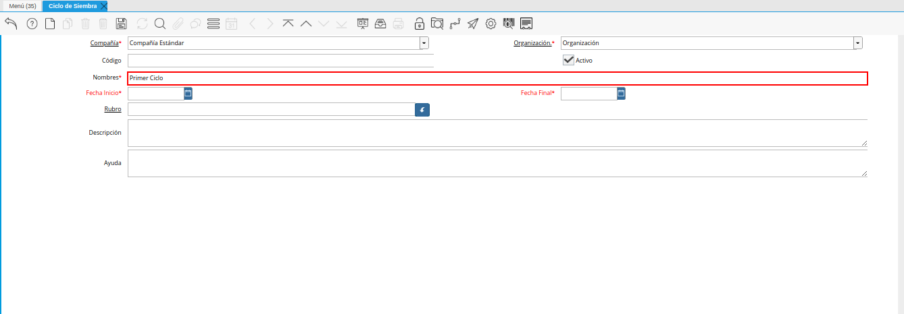
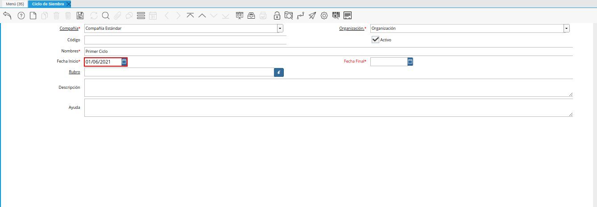
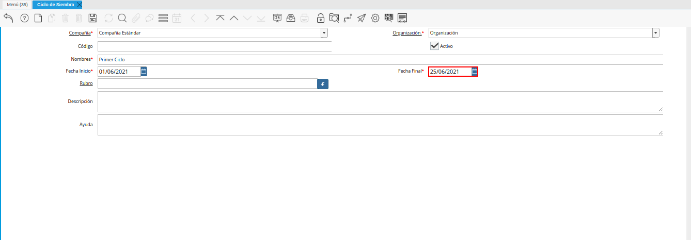
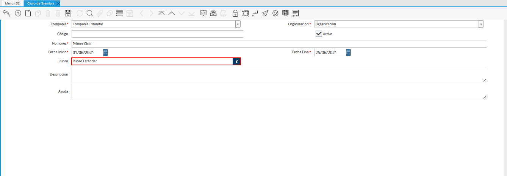
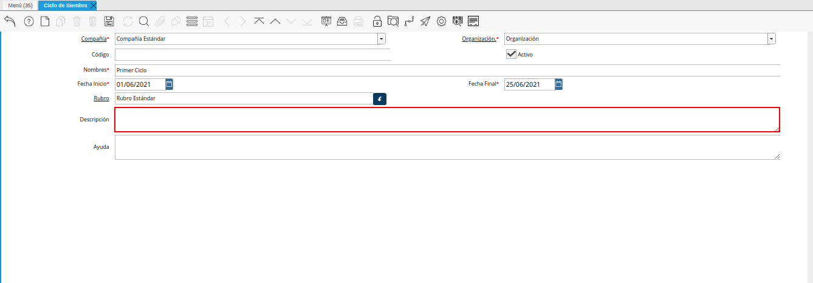

Ciclo de Siembra¶
Ubique y seleccione en el menú de ADempiere, la carpeta “Gestión de Asistencia al Agricultor”, luego seleccione la carpeta “Configuración de Asistencia Técnica”, por último seleccione la carpeta “Configuración de Cultivo”. Finalmente seleccione la ventana “Ciclo de Siembra”.

Imagen 1. Menú de ADempiere
Podrá visualizar la ventana “Ciclo de Siembra”, con los diferentes registros que posee la misma de los ciclos de siembra registrados en ADempiere.

Imagen 2. Ciclo de Siembra
Seleccione el icono “Registro Nuevo”, ubicado en la barra de herramientas de ADempiere.

Imagen 3. Icono Registro Nuevo
Seleccione en el campo “Organización”, la organización para la cual se encuentra realizando el registro.

Imagen 4. Campo Organización
Introduzca en el campo “Código”, el código correspondiente al registro que se encuentra realizando. De no ingresar ningún valor en el campo, ADempiere establece de manera automática el código del registro.

Imagen 5. Campo Código
Introduzca en el campo “Nombre”, el nombre del ciclo de siembra correspondiente al registro que se encuentra realizando.

Imagen 6. Campo Nombre
Seleccione en el campo “Fecha de Inicio”, la fecha de inicio del ciclo de siembra que se encuentra realizando.

Imagen 7. Campo Fecha de Inicio
Seleccione en el campo “Fecha Final”, la fecha final del ciclo de siembra que se encuentra realizando.

Imagen 8. Campo Fecha Final
Seleccione en el campo “Rubro”, el rubro correspondiente al ciclo de siembra que se encuentra realizando.

Imagen 9. Campo Rubro
Introduzca en el campo “Descripción”, una breve descripción referente al registro del ciclo de siembra que se encuentra realizando.

Imagen 10. Campo Descripción
Note
Recuerde guardar el registro de los campos, al seleccionar el icono “Guardar Cambios” ubicado en la barra de herramientas de ADempiere.